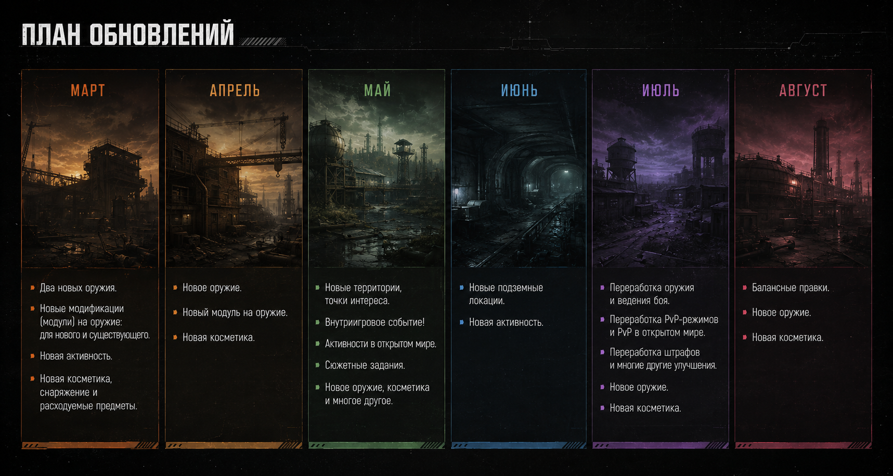

Повторяемость
Основные активности сохраняют высокую частоту повторного прохождения, но недостаточно меняются со временем и мало разнообразны.
GAME DESIGN — CASE 05
Концепция шестимесячного плана развития онлайн шутера: анализ проблем существующего контента, формирование дорожной карты, расстановка приоритетов и последовательное добавление новых игровых возможностей.
К моменту начала работы над обновлениями проект уже обладал сформировавшимся игровым циклом и набором основных активностей. Игроки могли получать новое снаряжение, участвовать в PvP, исследовать открытый мир, вступать во фракции и выполнять сюжетные цепочки заданий.
Однако со временем основная часть контента перестала давать достаточно новых причин возвращаться в игру. Новое быстро заканчивалось, а старое приедалось все сильнее.
Основные активности сохраняют высокую частоту повторного прохождения, но недостаточно меняются со временем и мало разнообразны.
Игроку становится сложнее находить долгосрочную цель после освоения существующего контента. Игроки ощущали отсутствие долгосрочных престижных целей и материальных.
Новые предметы и активности не всегда создают дополнительные взаимодействия с уже существующими системами.
Игрокам хотелось видеть не только новые предметы, но и новые способы взаимодействовать с игрой и новые цели, к которым можно было бы стремиться в течении длительного времени.
Не просто увеличить объём контента, а распределить его так, чтобы каждое крупное обновление решало отдельную проблему проекта: расширяло игровой цикл, добавляло новые сценарии взаимодействия или создавало долгосрочную цель для игрока.
Для решения проблемы выбран шестимесячный план развития проекта с выпуском крупного контентного этапа каждые два месяца. Между крупными обновлениями выходят небольшие обновления, содержащие новый контент в рамках уже существующих систем. Такой подход позволяет распределить нагрузку команды и постоянно поддерживать интерес игроков новым содержанием.

*Пример визуального представления дорожной карты для игроков.
Добавление три новых оружия, два из которых выходят в первом крупном обновлении, а последнее выйдет в малом обновлении в следующем месяце. В малое обновление входит новая модификация и новая косметика. Новые модификации как для нового, так и для старого вооружения. Небольшое количество контента, который использует уже существующие игровые системы, такие как новая активность, косметика, снаряжение и расходуемые припасы.
Новые территории, точки интереса, активности в открытом мире, сюжетные задания и небольшое количество дополнительного контента ( новое оружие, косметика и типы добываемых наград), создающий новые сценарии использования существующих механик. После освоения новых территорий игрок получает дополнительную причину вернуться к уже знакомому контенту: внутриигровое событие объединяет новые активности, фракции и награды в отдельную ветку активностей. В малое обновление входит незначительное расширение подземных локаций под новыми и релизными территориями и новая активность.
В крупном обновлении изменены механики работы оружия, PvP, влияния повреждений на игрока и штрафов во время боя в целом. Новое оружие и модификации. Изменение количества наград и баланса экономики на основе выводов после проведения внутриигрового события. В малом балансные правки, новое оружие, косметика и активность.
При планировании обновления важно учитывать не только ценность контента для игрока, но и стоимость его производства. Поэтому различные направления получают разные приоритеты в зависимости от того, насколько сильно они влияют на цикл разработки и значимость их выпуска.
Новые виды оружия не должны становиться исключительно предметами для коллекционирования. Их задача — создавать новые тактические возможности и изменять способы взаимодействия игрока с уже существующими активностями.
Часть нового контента строится на уже существующих механиках проекта. Это позволяет уменьшить объём разработки, снизить нагрузку на команду и одновременно расширить количество сценариев использования уже созданных систем.
Контент распределяется на несколько двухмесячных этапов вместо выпуска одного крупного обновления. Это позволяет регулярно возвращать игроков к проекту, равномернее распределять нагрузку на команду и использовать результаты предыдущего этапа для корректировки следующего.
Финальное событие использует системы и контент, добавленные на предыдущих этапах. Благодаря этому отдельные обновления не воспринимаются как независимые элементы, а постепенно формируют единый контентный цикл.
Итог
В данном концепте развитие проекта рассматривается как последовательный процесс: новые системы расширяют игровой цикл, контент создаёт новые сценарии их применения, а последующее событие объединяет их в единую активность. Кейс адаптирован специально для портфолио и может отличаться от оригинального проекта в отдельных деталях, названиях и визуальных материалах.